load("BC_Covariates.rda")
data <- read.csv("clean_data_utm.csv")DATA589 Spatial Project - Pine White Butterfly in BC
Data loading
Exploratory Analysis:
Convert to ppp object
library(spatstat)Warning: package 'spatstat' was built under R version 4.4.3Loading required package: spatstat.dataWarning: package 'spatstat.data' was built under R version 4.4.3Loading required package: spatstat.univarWarning: package 'spatstat.univar' was built under R version 4.4.3spatstat.univar 3.1-2Loading required package: spatstat.geomWarning: package 'spatstat.geom' was built under R version 4.4.3spatstat.geom 3.3-6Loading required package: spatstat.randomWarning: package 'spatstat.random' was built under R version 4.4.3spatstat.random 3.3-3Loading required package: spatstat.exploreWarning: package 'spatstat.explore' was built under R version 4.4.3Loading required package: nlmeWarning: package 'nlme' was built under R version 4.4.2spatstat.explore 3.4-2Loading required package: spatstat.modelWarning: package 'spatstat.model' was built under R version 4.4.3Loading required package: rpartspatstat.model 3.3-5Loading required package: spatstat.linnetWarning: package 'spatstat.linnet' was built under R version 4.4.3spatstat.linnet 3.2-5
spatstat 3.3-2
For an introduction to spatstat, type 'beginner' library(sf)Warning: package 'sf' was built under R version 4.4.3Linking to GEOS 3.13.0, GDAL 3.10.1, PROJ 9.5.1; sf_use_s2() is TRUEwindow_sf <- st_as_sf(DATA$Window)Loading required package: spWarning: package 'sp' was built under R version 4.4.3window_owin <- as.owin(window_sf)
data_ppp <- ppp(x =data$utm_x, y = data$utm_y, window = window_owin)Warning: 27 points were rejected as lying outside the specified windowWarning: data contain duplicated pointsdata_ppp_clean <- data_ppp[!duplicated(data_ppp$x) & !duplicated(data_ppp$y), ]
data_ppp_clean <- data_ppp_clean[data_ppp_clean$window]
plot(data_ppp_clean,
col = "grey70",
pch = 16,
cex = 0.6,
cols = 'blue',
legend = T)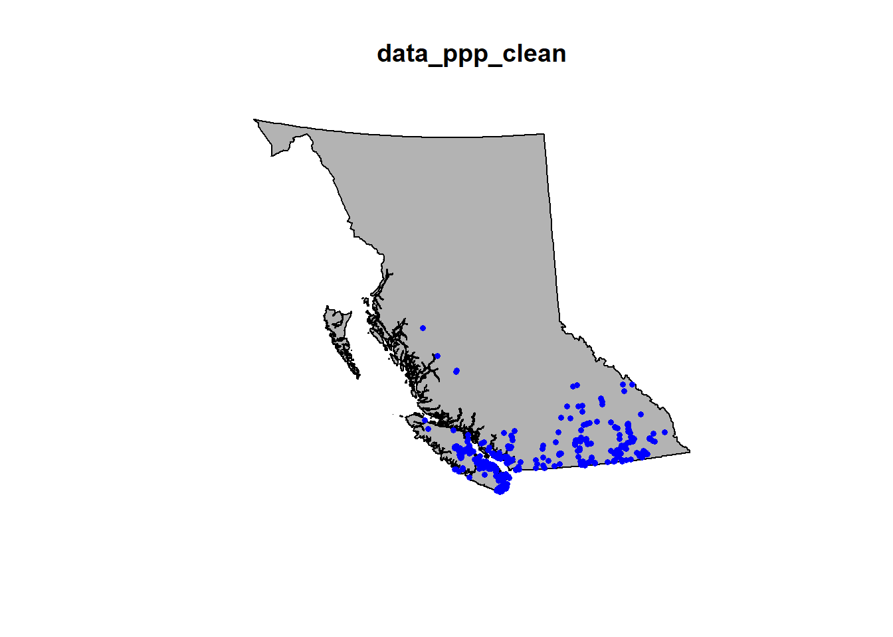
Visualization
plot(DATA$Forest,
main = "BC Forest")
plot(data_ppp_clean,
pch = 16,
cex = 0.6,
col = 'green',
add = TRUE)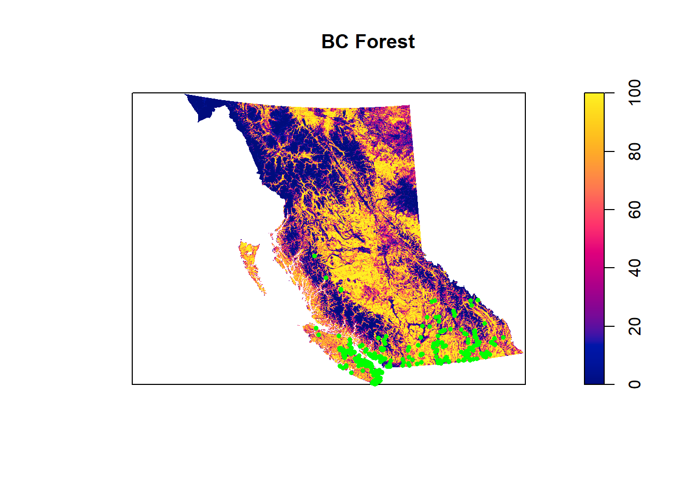
plot(DATA$Elevation,
main = "BC Elevation")
plot(data_ppp_clean,
pch = 16,
cex = 0.6,
col = 'green',
add = TRUE)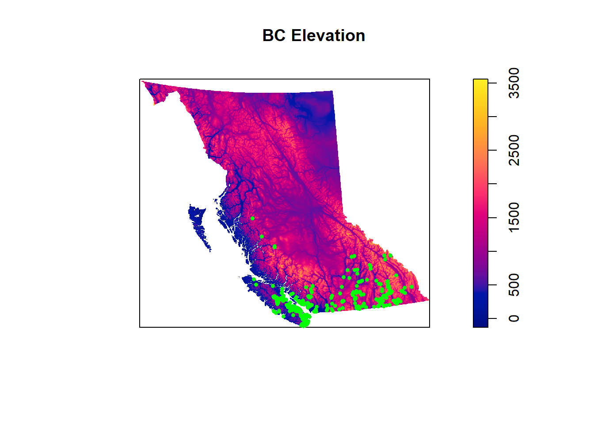
plot(DATA$HFI,
main = "BC HFI")
plot(data_ppp_clean,
pch = 16,
cex = 0.6,
col = 'green',
add = TRUE)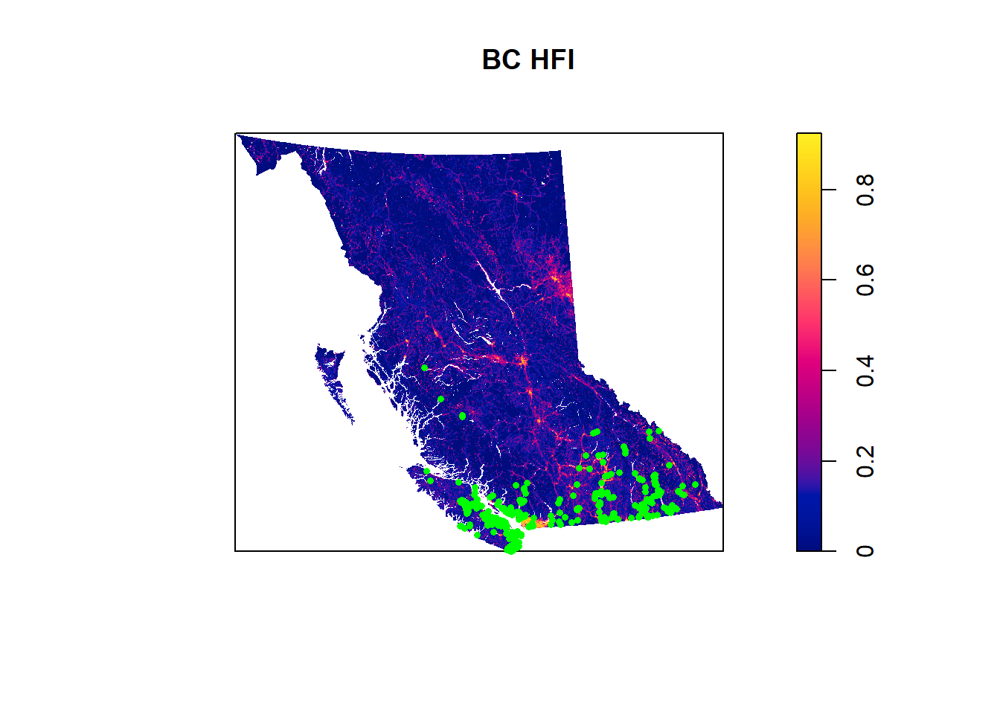
plot(DATA$Dist_Water,
main = "BC Dist of Water")
plot(data_ppp_clean,
pch = 16,
cex = 0.4,
col = 'green',
add = TRUE)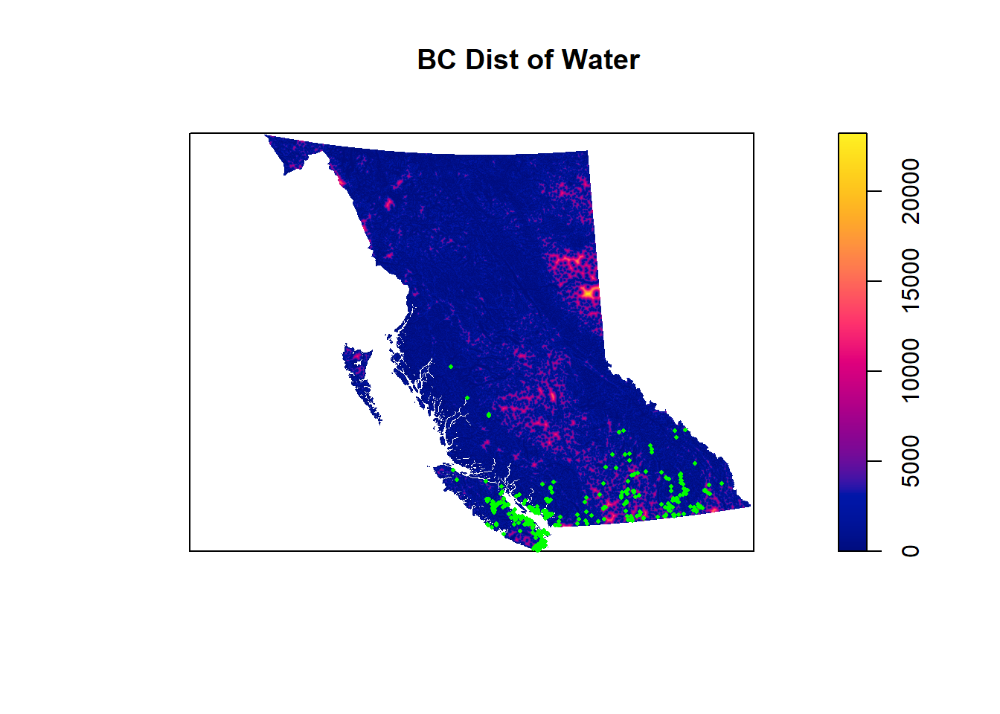
Perspective plot
M <- persp(DATA$Elevation,
colmap = terrain.colors(100),
theta = 45,
phi = 30,
shade = 0.6,
expand = 10,
xlab = "Longitude",
ylab = "Latitude",
zlab = "Elevation",
ticktype = "detailed",
border = NA,
ltheta = 120,
cex.lab = 1.2,
cex.axis = 1.1,
cex.main = 1.5,
visible = TRUE)
perspPoints(x = data_ppp_clean$x,
y = data_ppp_clean$y,
Z = DATA$Elevation,
M = M,
pch = 16,
cex = 0.5)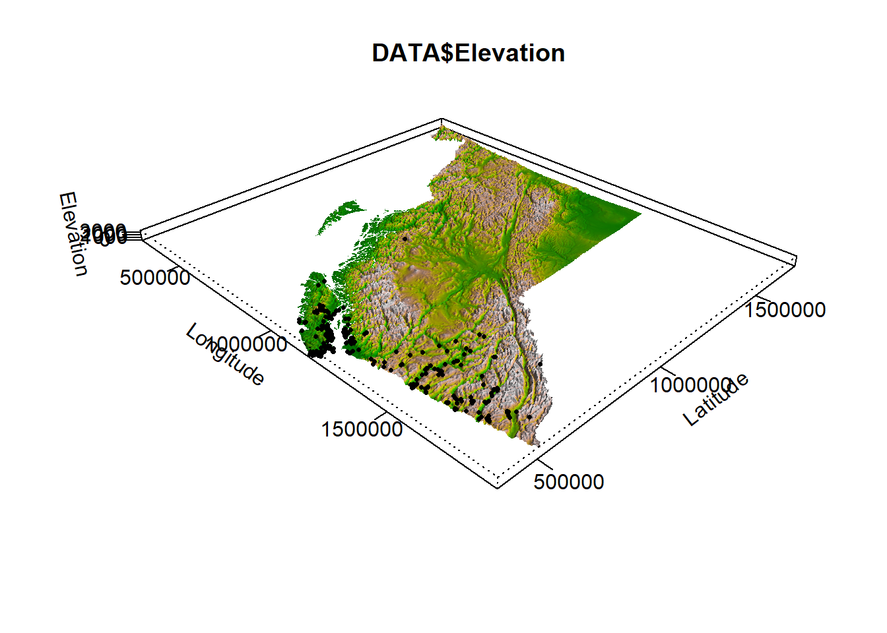
library(spatstat)
library(rgl) Warning: package 'rgl' was built under R version 4.4.3M <- persp(DATA$Elevation,
colmap = terrain.colors(100),
theta = 40,
phi = 35,
shade = 0.5,
expand = 8,
xlab = "Longitude",
ylab = "Latitude",
zlab = "Elevation (m)",
ticktype = "simple",
border = NA,
ltheta = 120,
cex.lab = 1.4,
cex.axis = 1.2,
cex.main = 1.6,
main = "Neophasia menapia Distribution over Elevation")
perspPoints(x = data_ppp_clean$x,
y = data_ppp_clean$y,
Z = DATA$Elevation,
M = M,
pch = 21,
col = "black",
bg = "orange",
cex = 0.7)Warning in perspPoints(x = data_ppp_clean$x, y = data_ppp_clean$y, Z =
DATA$Elevation, : M does not contain visibility information; it should be
recomputed by persp() with visible=TRUElegend("topright", legend = "Butterfly Observations",
pch = 21, pt.bg = "orange", col = "black", bty = "n")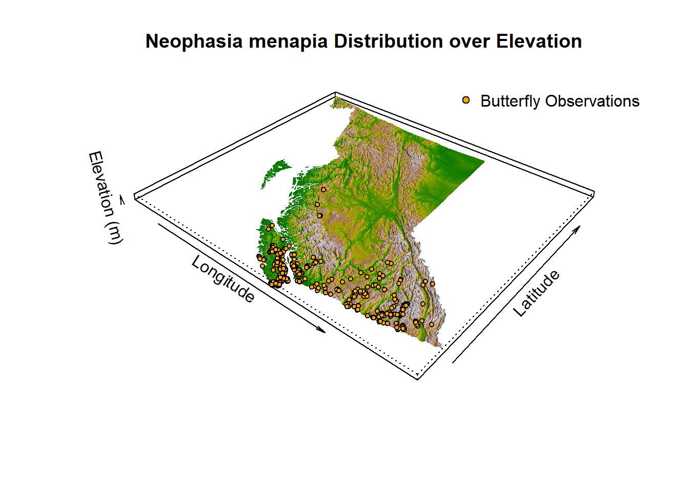
library(viridis)Warning: package 'viridis' was built under R version 4.4.2Loading required package: viridisLitelibrary(fields)Warning: package 'fields' was built under R version 4.4.3Loading required package: spamWarning: package 'spam' was built under R version 4.4.3Spam version 2.11-1 (2025-01-20) is loaded.
Type 'help( Spam)' or 'demo( spam)' for a short introduction
and overview of this package.
Help for individual functions is also obtained by adding the
suffix '.spam' to the function name, e.g. 'help( chol.spam)'.
Attaching package: 'spam'The following objects are masked from 'package:base':
backsolve, forwardsolve
Try help(fields) to get started.M_forest <- persp(DATA$Forest,
colmap = viridis(100),
theta = 45, phi = 30,
expand = 10,
shade = 0.5,
xlab = "Longitude",
ylab = "Latitude",
zlab = "Forest Cover",
visible = TRUE)
perspPoints(x = data_ppp_clean$x,
y = data_ppp_clean$y,
Z = DATA$Forest,
M = M_forest,
pch = 16, cex = 0.5)
image.plot(legend.only = TRUE,
zlim = range(DATA$Forest, na.rm = TRUE),
col = viridis(100),
legend.lab = "Forest Cover (%)") 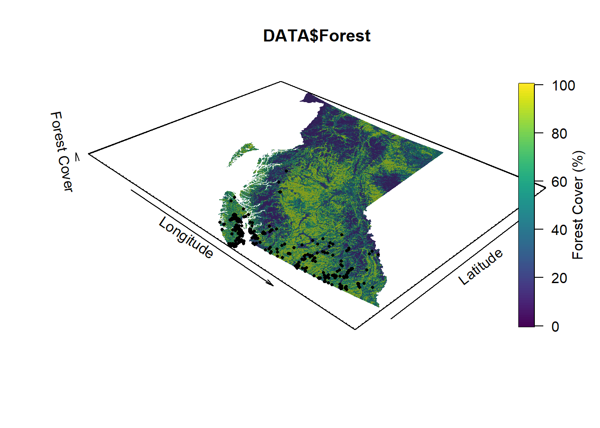
M_hfi <- persp(DATA$HFI,
colmap = magma(100),
theta = 45, phi = 30,
expand = 10,
shade = 0.5,
xlab = "Longitude",
ylab = "Latitude",
zlab = "Human Footprint",
visible = TRUE)Warning in persp.default(x = xcol, y = yrow, z = zmat, theta = 45, phi = 30, :
zero-length arrow is of indeterminate angle and so skippedperspPoints(x = data_ppp_clean$x,
y = data_ppp_clean$y,
Z = DATA$HFI,
M = M_hfi,
pch = 16, cex = 0.5)
image.plot(legend.only = TRUE,
zlim = range(DATA$HFI, na.rm = TRUE),
col = magma(100),
legend.lab = "Human Footprint") 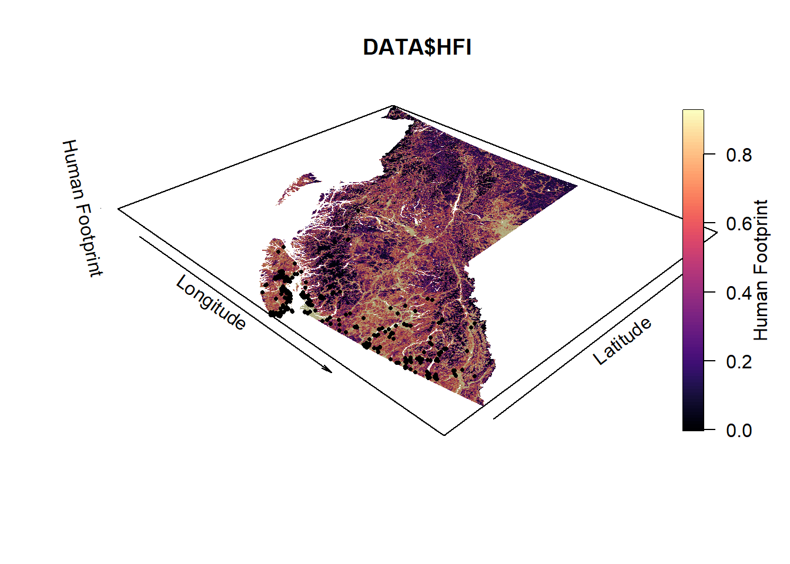
M_water <- persp(DATA$Dist_Water,
colmap = cividis(100),
theta = 45, phi = 30,
expand = 0.5,
shade = 0.5,
xlab = "Longitude",
ylab = "Latitude",
zlab = "Distance to Water",
visible = TRUE)
perspPoints(x = data_ppp_clean$x,
y = data_ppp_clean$y,
Z = DATA$Dist_Water,
M = M_water,
pch = 16, cex = 0.5)
image.plot(legend.only = TRUE,
zlim = range(DATA$Dist_Water, na.rm = TRUE),
col = cividis(100),
legend.lab = "Distance to Water") 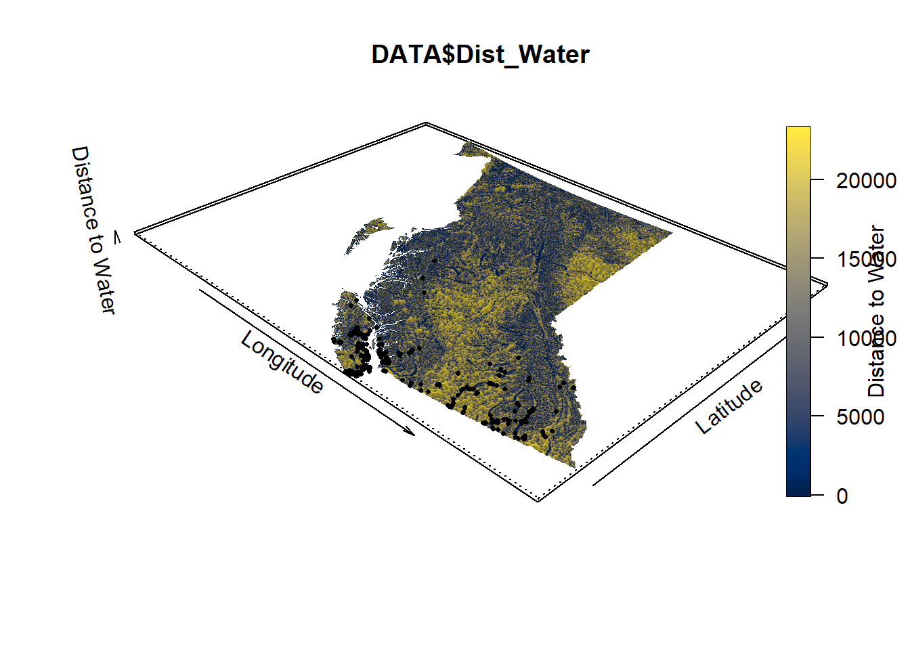
Categorization with Summary Table
- Elevation
elev_classes <- cut(DATA$Elevation,
breaks = 5,
labels = c("Very Low", "Low", "Medium", "High", "Very High"))
plot(elev_classes,
main = "Elevation Classes (5 levels) with Butterfly Locations")
plot(data_ppp_clean,
pch = 16,
cex = 0.4,
col='green',
add = TRUE)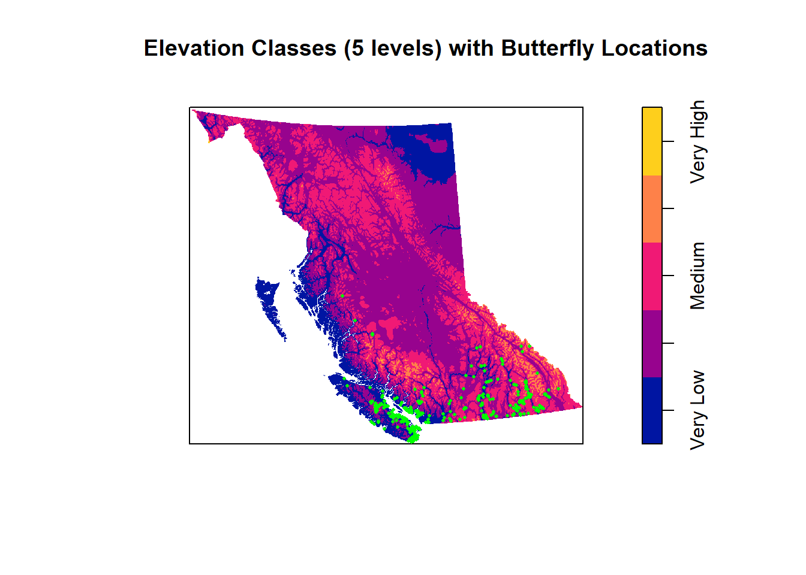
butterfly_elev_class <- elev_classes[data_ppp_clean]
table(butterfly_elev_class)butterfly_elev_class
Very Low Low Medium High Very High
328 358 24 0 0 - Forest
forest_classes <- cut(DATA$Forest,
breaks = 5,
labels = c("Very Low", "Low", "Medium", "High", "Very High"))
plot(forest_classes,
main = "Forest Classes (5 levels) with Butterfly Locations")
plot(data_ppp_clean,
pch = 16,
cex = 0.4,
col='green',
add = TRUE)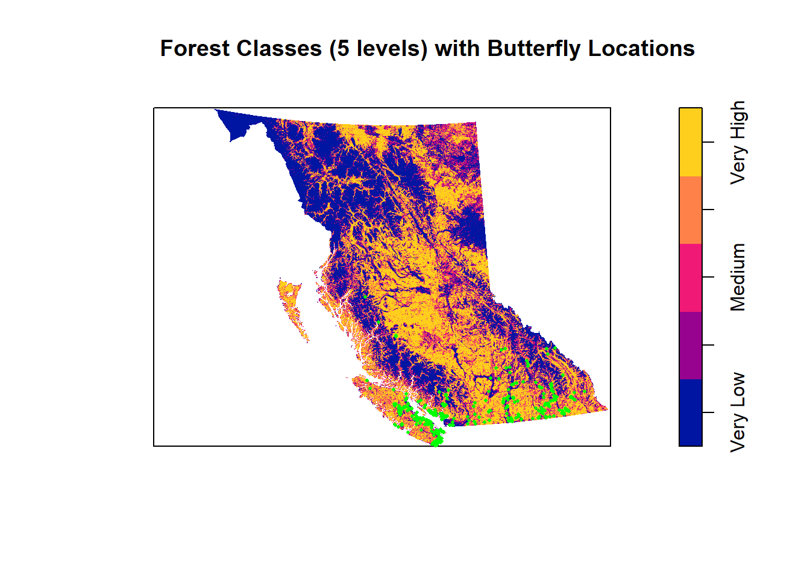
butterfly_forest_class <- forest_classes[data_ppp_clean]
table(butterfly_forest_class)butterfly_forest_class
Very Low Low Medium High Very High
77 188 132 149 160 - HFI
hfi_classes <- cut(DATA$HFI,
breaks = 5,
labels = c("Very Low", "Low", "Medium", "High", "Very High"))
plot(hfi_classes,
main = "HFI Classes (5 levels) with Butterfly Locations")
plot(data_ppp_clean,
pch = 16,
cex = 0.4,
col='green',
add = TRUE)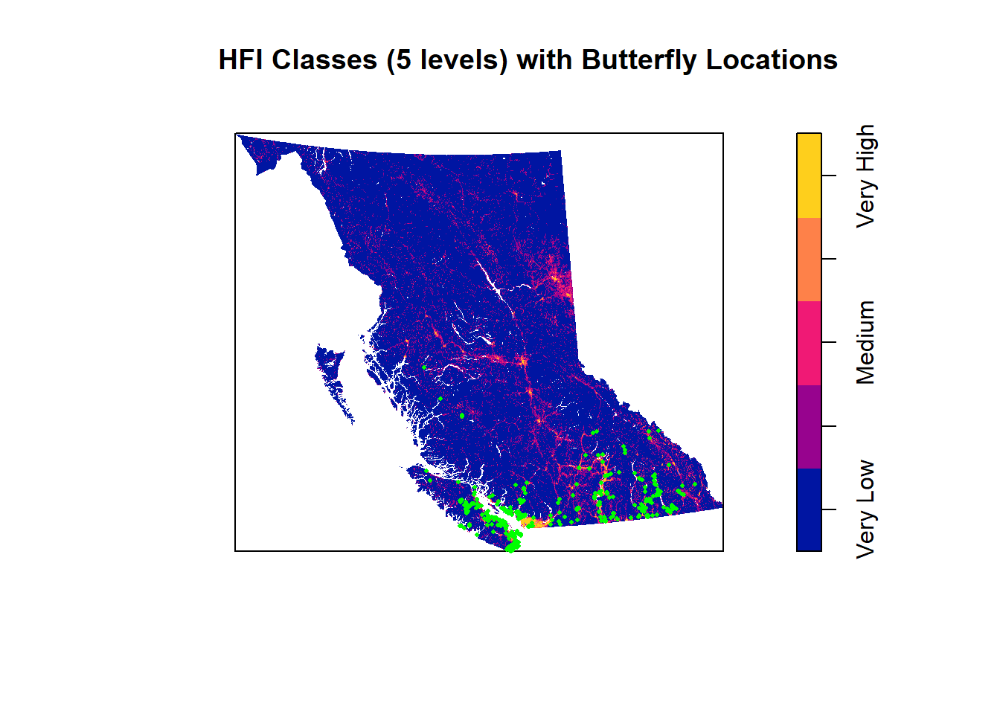
butterfly_hfi_class <- hfi_classes[data_ppp_clean]
table(butterfly_hfi_class)butterfly_hfi_class
Very Low Low Medium High Very High
199 138 64 182 65 - Dist of Water
water_classes <- cut(DATA$Dist_Water,
breaks = 5,
labels = c("Very Low", "Low", "Medium", "High", "Very High"))
plot(water_classes,
main = "Dist of Water Classes (5 levels) with Butterfly Locations")
plot(data_ppp_clean,
pch = 16,
cex = 0.4,
col='green',
add = TRUE)butterfly_water_class <- water_classes[data_ppp_clean]
table(butterfly_water_class)butterfly_water_class
Very Low Low Medium High Very High
641 59 18 0 0 Distance
m <- data.frame(butterfly = data_ppp_clean)
m$Dist <- nndist(data_ppp_clean)
marks(data_ppp_clean) <- m
options(scipen=9999999)
plot(data_ppp_clean, which.marks = "Dist")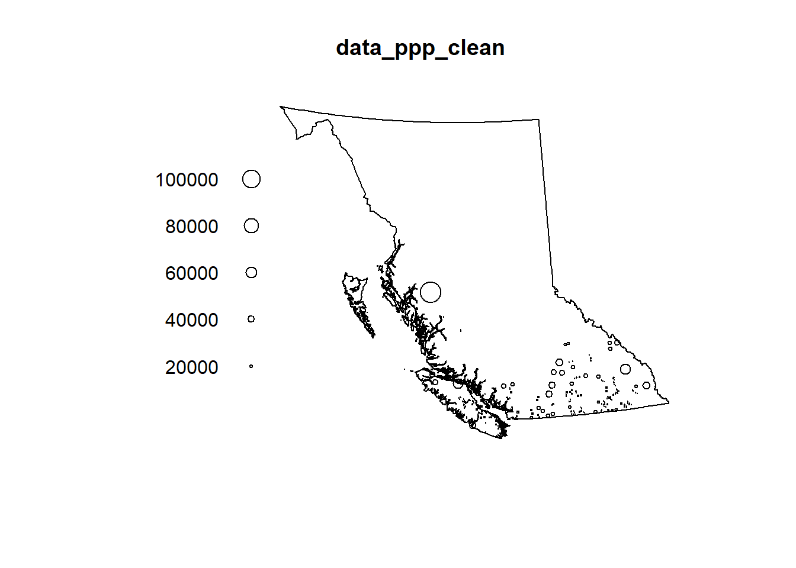
KDE
- Elevation
library(ks)Warning: package 'ks' was built under R version 4.4.3elev_all <- lookup.im(DATA$Elevation, x = coords(data_ppp_clean)[,1], y = coords(data_ppp_clean)[,2])Warning in lookup.im(DATA$Elevation, x = coords(data_ppp_clean)[, 1], y =
coords(data_ppp_clean)[, : Internal error: NA's generatedkde_butterfly <- density(elev_all, na.rm = T)elev_pro <- as.vector(DATA$Elevation$v)
kde_elev <- density(elev_pro, na.rm = T)
plot(kde_elev,
main = "Elevation KDE in BC and Butterflies",
xlab = "Elevation",
ylab = "Density",
col = "blue",
lwd = 2)
# Butterflies
lines(kde_butterfly,
col = "green",
lwd = 2)
# legend
legend("topright",
legend = c("Elevation", "Butterflies"),
col = c("blue", "green"),
lty = c(1, 1),
lwd = 2)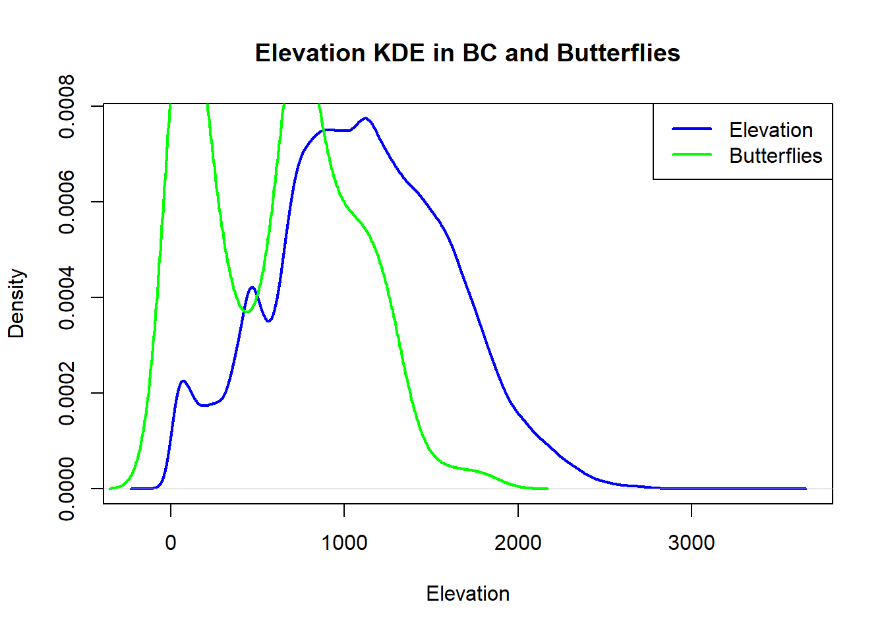
- Forest
forest_pro <- as.vector(DATA$Forest$v)
kde_forest <- density(forest_pro, na.rm = T)
plot(kde_forest,
main = "Forest KDE in BC and Butterflies",
xlab = "Forest",
ylab = "Density",
col = "blue",
lwd = 2)
# Butterflies
lines(kde_butterfly,
col = "green",
lwd = 2)
# legend
legend("topright",
legend = c("Forest", "Butterflies"),
col = c("blue", "green"),
lty = c(1, 1),
lwd = 2)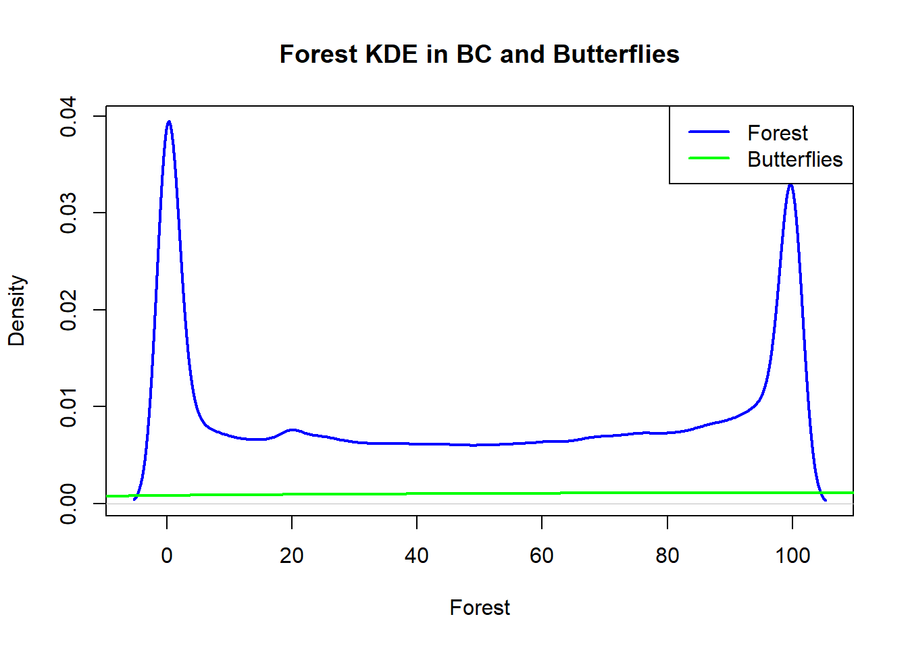
- HFI
hfi_pro <- as.vector(DATA$HFI$v)
kde_hfi <- density(hfi_pro, na.rm = T)
plot(kde_hfi,
main = "HFI KDE in BC and Butterflies",
xlab = "HFI",
ylab = "Density",
col = "blue",
lwd = 2)
# Butterflies
lines(kde_butterfly,
col = "green",
lwd = 2)
# legend
legend("topright",
legend = c("HFI", "Butterflies"),
col = c("blue", "green"),
lty = c(1, 1),
lwd = 2)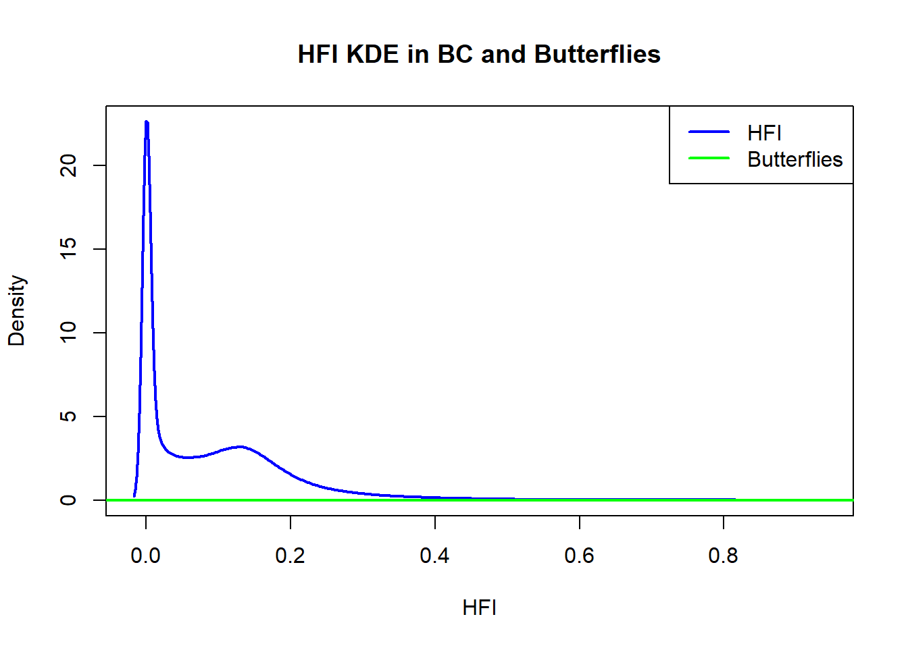
- Water
water_pro <- as.vector(DATA$Dist_Water$v)
kde_water <- density(water_pro, na.rm = T)
plot(kde_water,
main = "Dist of Water KDE in BC and Butterflies",
xlab = "Dist of Water",
ylab = "Density",
col = "blue",
lwd = 2)
# Butterflies
lines(kde_butterfly,
col = "green",
lwd = 2)
# legend
legend("topright",
legend = c("Dist of Water", "Butterflies"),
col = c("blue", "green"),
lty = c(1, 1),
lwd = 2)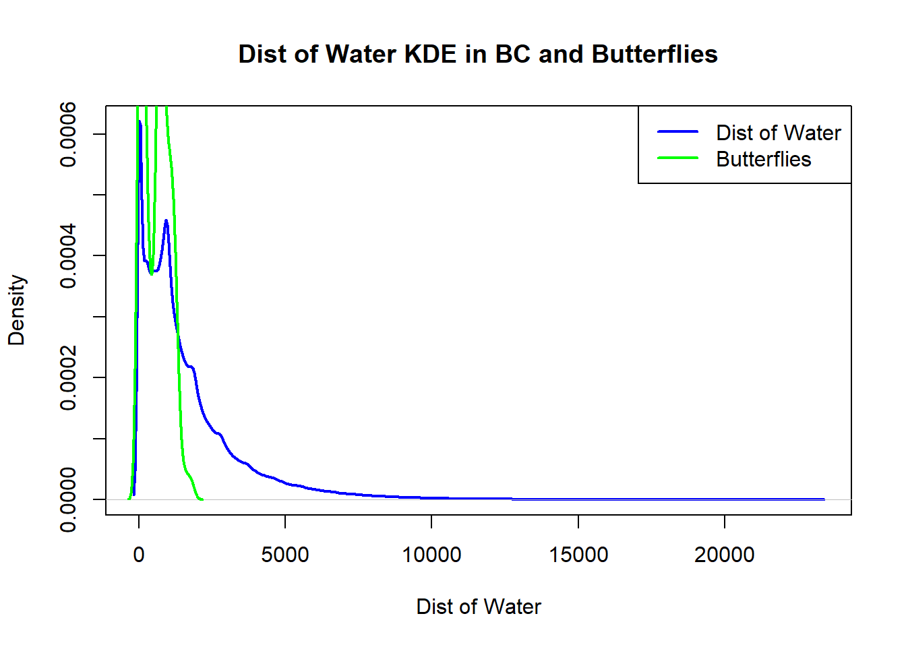
Quadrats & Intensity
- Quadrats
library(ggplot2)
#Split into a 10 by 10 quadrat and count points
Q <- quadratcount(data_ppp_clean,
nx = 10,
ny = 10)
quadrat.test(Q)Warning: Some expected counts are small; chi^2 approximation may be inaccurate
Chi-squared test of CSR using quadrat counts
data:
X2 = 10772, df = 63, p-value < 0.00000000000000022
alternative hypothesis: two.sided
Quadrats: 64 tiles (irregular windows)data_ppp_clean_unmark <- unmark(data_ppp_clean)
plot(data_ppp_clean_unmark,
pch = 16,
cex = 0.5,
cols = "#046C9A",
main = "BC Butterfly",
which.marks = FALSE)
plot(Q, cex = 1, col = "red", add = TRUE)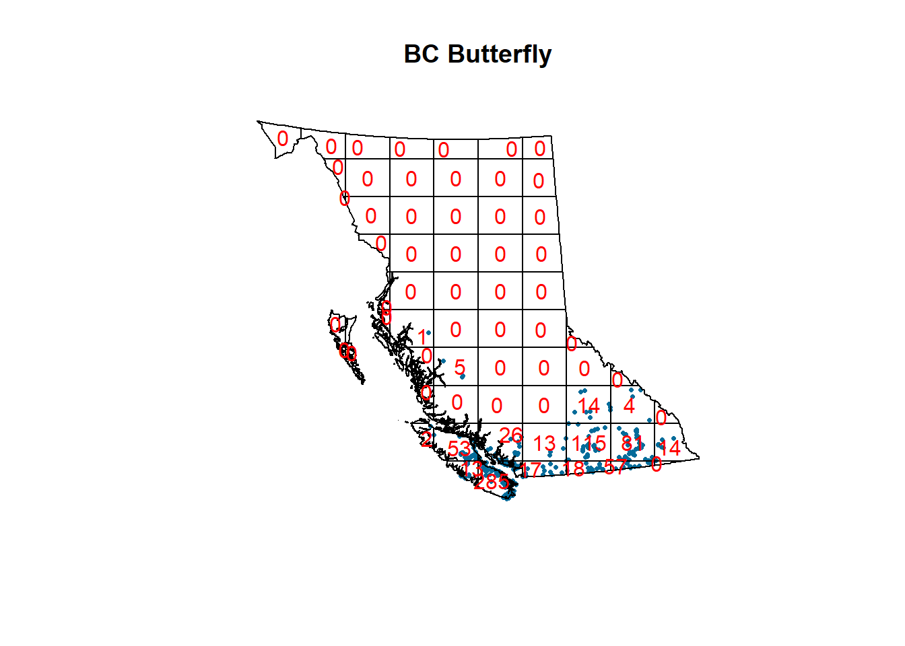
- Intensity
plot(intensity(Q, image = T),
main = "")
plot(data_ppp_clean_unmark,
pch = 16,
cex = 0.6,
cols = "white",
add = T)
plot(data_ppp_clean_unmark,
pch = 16,
cex = 0.5,
cols = "black",
add = T)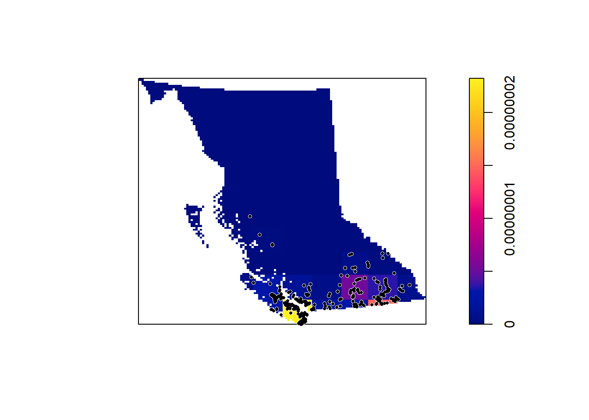
Kernel Estimation
plot(density(data_ppp_clean_unmark),
#ribbon = F,
main = "Kernel Estimate")
plot(data_ppp_clean_unmark,
pch = 16,
cex = 0.8,
cols = "white",
add = T)
plot(data_ppp_clean_unmark,
pch = 16,
cex = 0.6,
cols = "black",
add = T)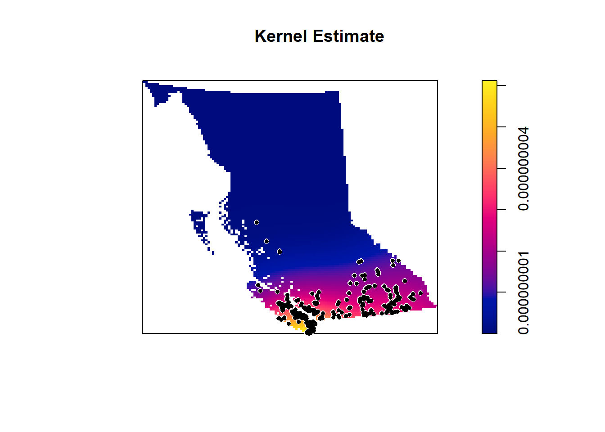
Hot Spot Analysis
R <- bw.diggle(data_ppp_clean_unmark)
LR <- scanLRTS(data_ppp_clean_unmark, r = R)
plot(LR)
plot(data_ppp_clean$window, add = TRUE, border = "white")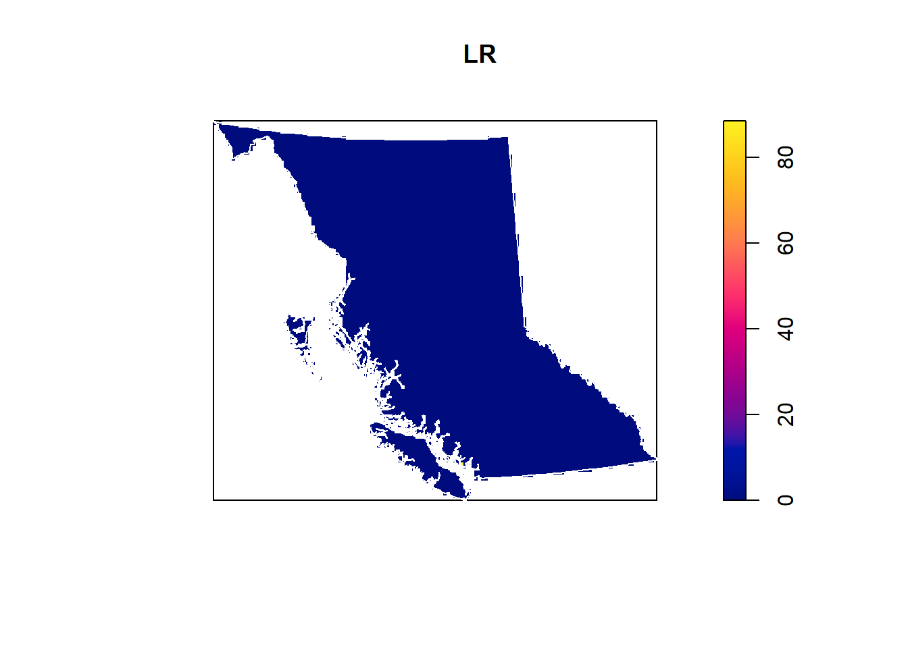
Relationships with covariates
- Elevation
#Extract elevation information
elev <- DATA$Elevation
#define quartiles
b <- quantile(elev, probs = (0:4)/4, type = 2)
#Split image into 4 equal-area quadrats based on elevation values
Zcut <- cut(elev, breaks = b)
V <- tess(image = Zcut)
#Count points in each quadrate
quadratcount(data_ppp_clean_unmark, tess = V)Warning in quadratcount.ppp(data_ppp_clean_unmark, tess = V): Tessellation does
not contain all the points of Xtile
(-130,761] (761,1.1e+03] (1.1e+03,1.46e+03] (1.46e+03,3.55e+03]
458 156 90 13 rho_elev <- rhohat(data_ppp_clean_unmark, elev)Warning: Values for 1 query point lying outside the pixel image domain were
estimated by projection to the nearest pixelplot(rho_elev, xlim = c(0, max(rho_elev$elev)))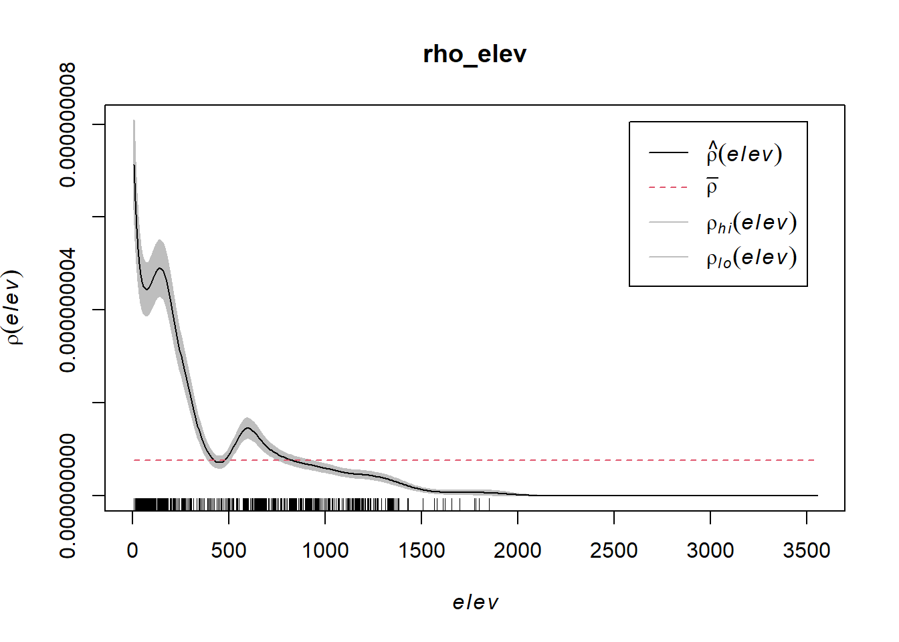
- Forest
forest <- DATA$Forest
#define quartiles
b <- quantile(forest, probs = (0:4)/4, type = 2)
#Split image into 4 equal-area quadrats based on elevation values
Zcut <- cut(forest, breaks = b)
V <- tess(image = Zcut)
#Count points in each quadrate
quadratcount(data_ppp_clean_unmark, tess = V)tile
(0,11.6] (11.6,50.2] (50.2,86.9] (86.9,100]
42 291 256 129 rho_forest <- rhohat(data_ppp_clean_unmark, forest)
plot(rho_forest, xlim = c(0, max(rho_forest$forest)))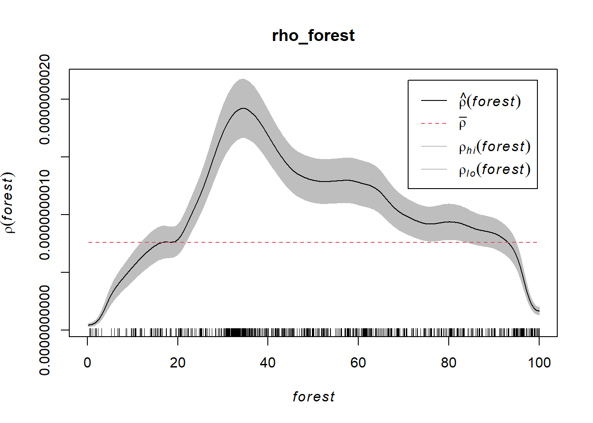
- HFI
HFI <- DATA$HFI
#define quartiles
b <- quantile(HFI, probs = (0:4)/4, type = 2)
#Split image into 4 equal-area quadrats based on elevation values
Zcut <- cut(HFI, breaks = b)
V <- tess(image = Zcut)
#Count points in each quadrate
quadratcount(data_ppp_clean_unmark, tess = V)Warning in quadratcount.ppp(data_ppp_clean_unmark, tess = V): Tessellation does
not contain all the points of Xtile
(0,0.000337] (0.000337,0.063] (0.063,0.148] (0.148,0.924]
8 27 104 578 rho_hfi <- rhohat(data_ppp_clean_unmark,HFI)Warning: Values for 1 query point lying outside the pixel image domain were
estimated by projection to the nearest pixelplot(rho_hfi, xlim = c(0, max(rho_hfi$HFI)))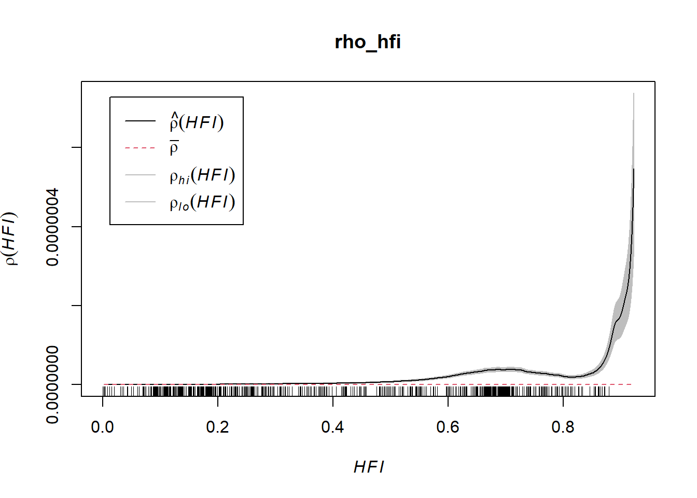
- Water
water <- DATA$Dist_Water
#define quartiles
b <- quantile(water, probs = (0:4)/4, type = 2)
#Split image into 4 equal-area quadrats based on elevation values
Zcut <- cut(water, breaks = b)
V <- tess(image = Zcut)
#Count points in each quadrate
quadratcount(data_ppp_clean_unmark, tess = V)Warning in quadratcount.ppp(data_ppp_clean_unmark, tess = V): Tessellation does
not contain all the points of Xtile
(0,483] (483,1.1e+03] (1.1e+03,2.18e+03] (2.18e+03,2.32e+04]
187 155 179 191 rho_water <- rhohat(data_ppp_clean_unmark,water)
plot(rho_water)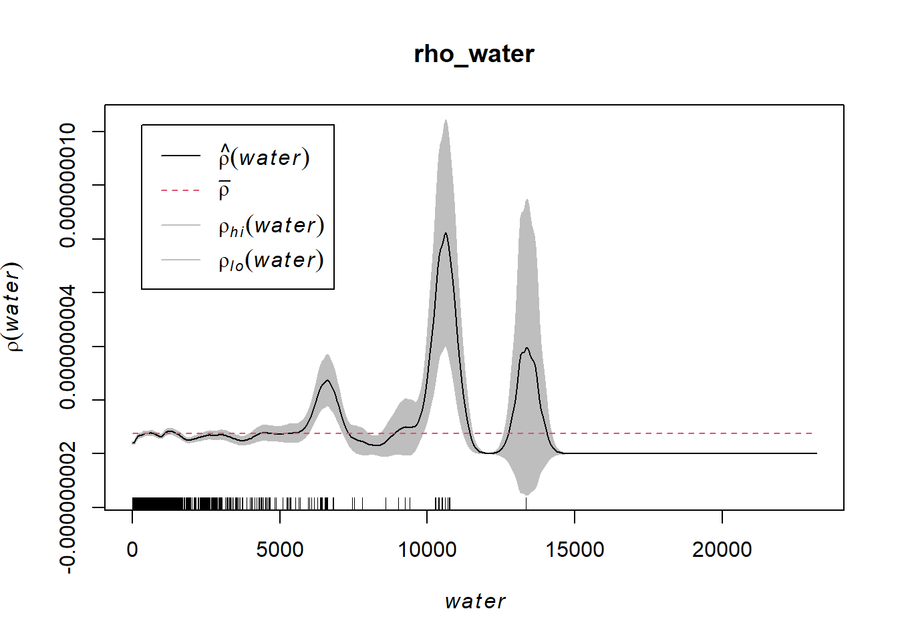
Ripley’s K-function
- inhomogeneous K Function plot
lambda_est <- density(data_ppp_clean)
k_inhom <- Kinhom(data_ppp_clean, lambda=lambda_est)
plot(k_inhom)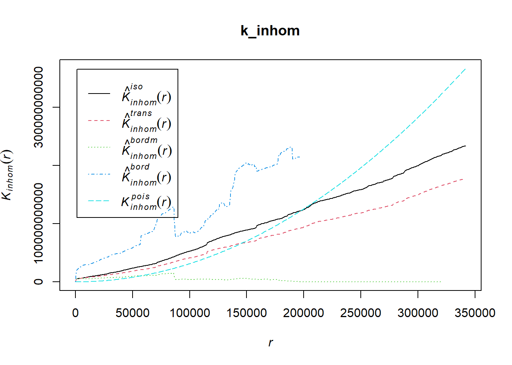
Pair Correlation Function ()
- homogeneous and inhomogeneous
pcf_data <- pcf(data_ppp_clean)
g_inhom <- pcfinhom(data_ppp_clean)
lambda_data_pos <- density(data_ppp_clean,
sigma=bw.ppl,
positive=TRUE)
pcf_data_hom <- envelope(data_ppp_clean,
pcf,
nsim = 19)Generating 19 simulations of CSR ...
1, 2,
[1:18:52 remaining, estimate finish 2025-04-23 00:20:52]
3,
[59:55 remaining, estimate finish 2025-04-23 00:04:46]
4,
[54:30 remaining, estimate finish 2025-04-23 00:02:47]
5,
[50:01 remaining, estimate finish 2025-04-23 00:01:40]
6,
[45:50 remaining, estimate finish 2025-04-23 00:00:50]
7,
[40:38 remaining, estimate finish 2025-04-22 23:58:19]
8,
[35:27 remaining, estimate finish 2025-04-22 23:55:23]
9,
[31:29 remaining, estimate finish 2025-04-22 23:54:02]
10,
[28:13 remaining, estimate finish 2025-04-22 23:53:48]
11,
[25:31 remaining, estimate finish 2025-04-22 23:54:47]
12,
[21:57 remaining, estimate finish 2025-04-22 23:53:49]
13,
[18:34 remaining, estimate finish 2025-04-22 23:53:05]
14,
[15:12 remaining, estimate finish 2025-04-22 23:52:05]
15,
[11:46 remaining, estimate finish 2025-04-22 23:50:20]
16, [8:32 remaining] 17, [5:30 remaining] 18, [2:44 remaining]
19.
Done.pcf_data_inhom <- envelope(data_ppp_clean,
pcfinhom,
simulate = expression(rpoispp(lambda_data_pos)),
nsim = 19)Generating 19 simulations by evaluating expression ...
1, 2, 3, 4, 5, 6, 7, 8, 9, 10, 11, 12, 13, 14, 15, 16, 17, 18,
19.
Done.plot(pcf_data,
theo ~ r,
ylim = c(0,20),
main = "",
col = "grey70",
lwd = 2,
lty = "dashed")
plot(pcf_data,
iso ~ r,
col = c("#046C9A"),
lwd = 2,
add = T)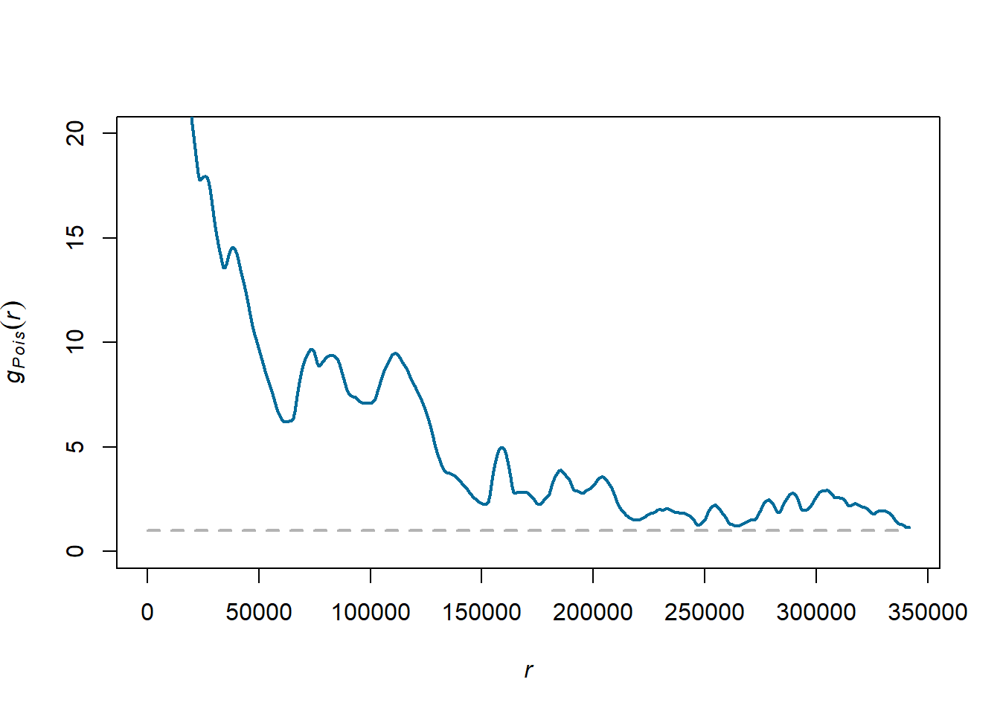
plot(g_inhom,
theo ~ r,
ylim = c(0,9),
main = "",
col = "grey70",
lwd = 2,
lty = "dashed")
plot(g_inhom,
iso ~ r,
col = c("#046C9A"),
lwd = 2,
add = T)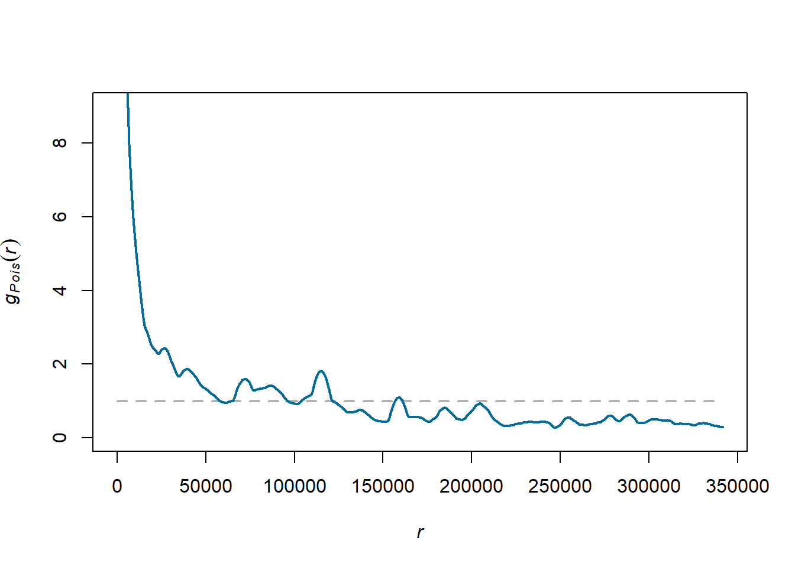
plot(pcf_data_hom)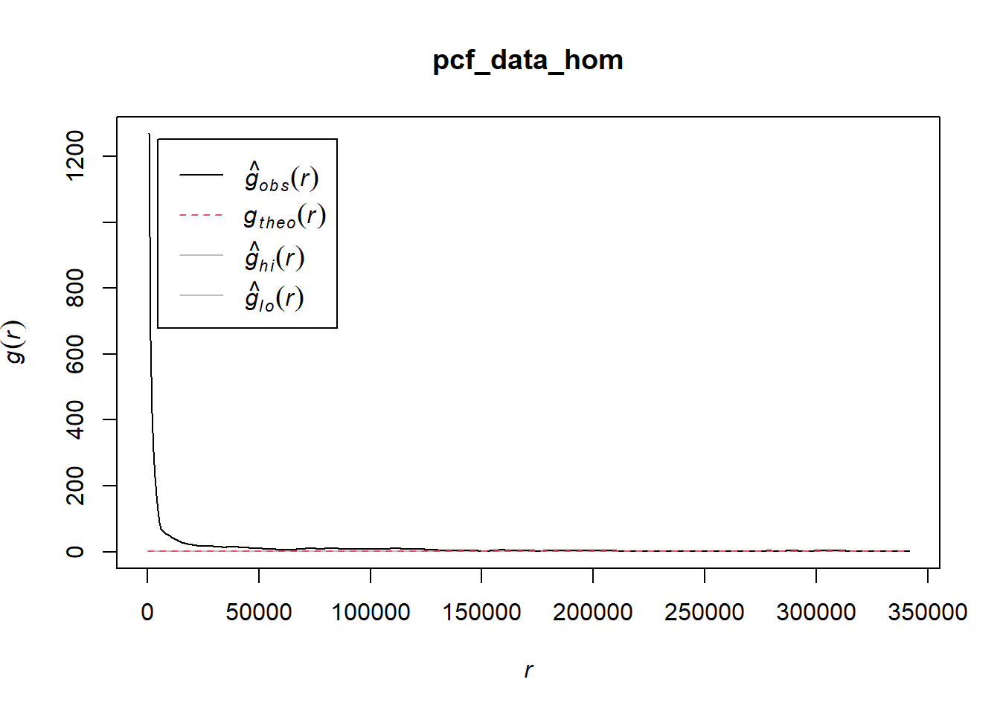
Error in UseMethod("distmap") :
no applicable method for 'distmap' applied to an object of class "im"plot(pcf_data_inhom)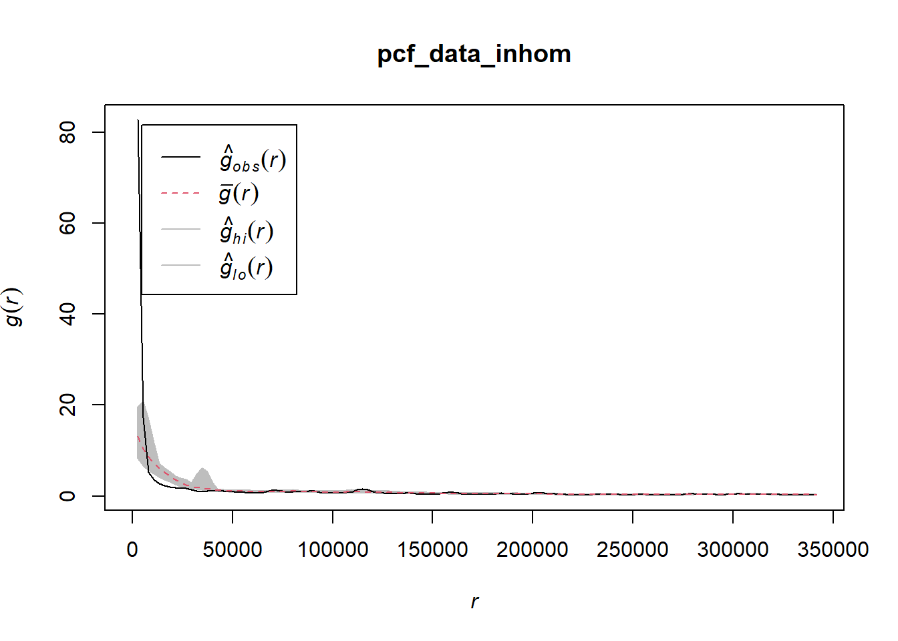
Poisson Point Process Models
Correlation
correlation <- cor.im(elev, forest,HFI, water, use = "pairwise.complete.obs")
correlation ..1 ..2 ..3 ..4
..1 1.00000000 -0.26204718 -0.26625626 -0.03426387
..2 -0.26204718 1.00000000 0.06615541 0.04825439
..3 -0.26625626 0.06615541 1.00000000 0.13229408
..4 -0.03426387 0.04825439 0.13229408 1.00000000Model Fitting
covariates <- harmonise.im(elev = elev, HFI = HFI)
elev_harmonised <- covariates$elev
HFI_harmonised <- covariates$HFI
# Extract both covariate values at all points (including NA)
elev_vals <- elev_harmonised[data_ppp_clean_unmark, drop=FALSE]
hfi_vals <- HFI_harmonised[data_ppp_clean_unmark, drop=FALSE]
# Now drop only those rows with NA in either column
good <- !is.na(elev_vals) & !is.na(hfi_vals)
# Subset the point pattern
data_ppp_clean_noNA <- data_ppp_clean_unmark[good]- Null model
fit_null <- ppm(data_ppp_clean_unmark ~ 1)
fit_nullStationary Poisson process
Fitted to point pattern dataset 'data_ppp_clean_unmark'
Intensity: 0.0000000007571744
Estimate S.E. CI95.lo CI95.hi Ztest Zval
log(lambda) -21.00143 0.03731967 -21.07457 -20.92828 *** -562.7442- Linear model
fit_simple <- ppm(data_ppp_clean_unmark ~ elev + forest + HFI + water)Warning: Values of the covariates 'elev', 'HFI' were NA or undefined at 0.5%
(13 out of 2617) of the quadrature points. Occurred while executing: ppm.ppp(Q
= data_ppp_clean_unmark, trend = ~elev + forest + HFI +fit_simpleNonstationary Poisson process
Fitted to point pattern dataset 'data_ppp_clean_unmark'
Log intensity: ~elev + forest + HFI + water
Fitted trend coefficients:
(Intercept) elev forest HFI water
-22.10619751587 -0.00141449741 0.01692605080 6.08358093232 0.00002560846
Estimate S.E. CI95.lo CI95.hi
(Intercept) -22.10619751587 0.15525210579 -22.410486051740 -21.80190898000
elev -0.00141449741 0.00009801125 -0.001606595928 -0.00122239890
forest 0.01692605080 0.00144783615 0.014088344097 0.01976375751
HFI 6.08358093232 0.16684883093 5.756563232834 6.41059863180
water 0.00002560846 0.00001730489 -0.000008308498 0.00005952542
Ztest Zval
(Intercept) *** -142.38903
elev *** -14.43199
forest *** 11.69058
HFI *** 36.46163
water 1.47984
Problem:
Values of the covariates 'elev', 'HFI' were NA or undefined at 0.5% (13 out of
2617) of the quadrature points- Quadratic model
fit_quad <- ppm(data_ppp_clean_unmark ~ elev + I(elev^2) + forest + I(forest^2) + HFI)Warning: Values of the covariates 'elev', 'HFI' were NA or undefined at 0.5%
(13 out of 2617) of the quadrature points. Occurred while executing: ppm.ppp(Q
= data_ppp_clean_unmark, trend = ~elev + I(elev^2) +fit_quadNonstationary Poisson process
Fitted to point pattern dataset 'data_ppp_clean_unmark'
Log intensity: ~elev + I(elev^2) + forest + I(forest^2) + HFI
Fitted trend coefficients:
(Intercept) elev I(elev^2) forest
-22.8215832962599 -0.0015244687209 0.0000001413128 0.0618566323464
I(forest^2) HFI
-0.0004274273572 5.9559862808232
Estimate S.E. CI95.lo
(Intercept) -22.8215832962599 0.1896946370186 -23.1933779528767
elev -0.0015244687209 0.0002526793965 -0.0020197112377
I(elev^2) 0.0000001413128 0.0000001655919 -0.0000001832414
forest 0.0618566323464 0.0055913519138 0.0508977839705
I(forest^2) -0.0004274273572 0.0000501093764 -0.0005256399303
HFI 5.9559862808232 0.1615901988419 5.6392753108384
CI95.hi Ztest Zval
(Intercept) -22.449788639643 *** -120.3069504
elev -0.001029226204 *** -6.0332134
I(elev^2) 0.000000465867 0.8533799
forest 0.072815480722 *** 11.0629117
I(forest^2) -0.000329214784 *** -8.5298878
HFI 6.272697250808 *** 36.8585862
Problem:
Values of the covariates 'elev', 'HFI' were NA or undefined at 0.5% (13 out of
2617) of the quadrature points- Best model
fit_best <- ppm(data_ppp_clean_unmark ~ elev + water + forest + I(forest^2) + HFI + I(HFI^2))Warning: Values of the covariates 'elev', 'HFI' were NA or undefined at 0.5%
(13 out of 2617) of the quadrature points. Occurred while executing: ppm.ppp(Q
= data_ppp_clean_unmark, trend = ~elev + water + forest +fit_bestNonstationary Poisson process
Fitted to point pattern dataset 'data_ppp_clean_unmark'
Log intensity: ~elev + water + forest + I(forest^2) + HFI + I(HFI^2)
Fitted trend coefficients:
(Intercept) elev water forest I(forest^2)
-23.3216787054 -0.0014147846 0.0000535763 0.0547829521 -0.0003750537
HFI I(HFI^2)
11.0671437844 -6.0831485274
Estimate S.E. CI95.lo CI95.hi Ztest
(Intercept) -23.3216787054 0.19718761777 -23.70815933444 -22.93519807641 ***
elev -0.0014147846 0.00009757148 -0.00160602122 -0.00122354804 ***
water 0.0000535763 0.00001751244 0.00001925256 0.00008790004 **
forest 0.0547829521 0.00572664043 0.04355894309 0.06600696107 ***
I(forest^2) -0.0003750537 0.00005168070 -0.00047634601 -0.00027376140 ***
HFI 11.0671437844 0.66243197384 9.76880097351 12.36548659536 ***
I(HFI^2) -6.0831485274 0.75713635586 -7.56710851625 -4.59918853851 ***
Zval
(Intercept) -118.271517
elev -14.499981
water 3.059329
forest 9.566333
I(forest^2) -7.257133
HFI 16.706838
I(HFI^2) -8.034416
Problem:
Values of the covariates 'elev', 'HFI' were NA or undefined at 0.5% (13 out of
2617) of the quadrature pointsAIC - model evaluation
AIC(fit_null)[1] 31596.05AIC(fit_simple)[1] 29376.43AIC(fit_quad)[1] 29300.52AIC(fit_best)[1] 29219.54Model plots
#Plot the fitted model
plot(fit_best,
se = FALSE,
superimpose = FALSE)
plot(data_ppp_clean_unmark,
pch = 16,
cex = 0.6,
cols = "white",
add = TRUE)
plot(data_ppp_clean_unmark,
pch = 16,
cex = 0.5,
cols = "black",
add = TRUE)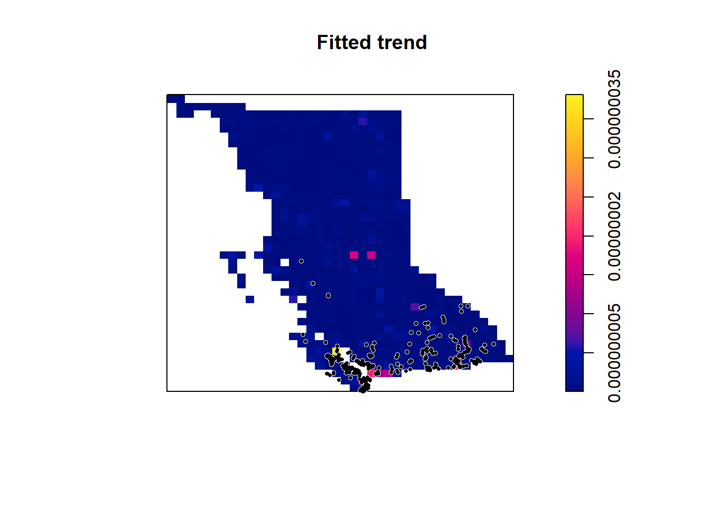
#Plot the predict value
plot(predict(fit_best))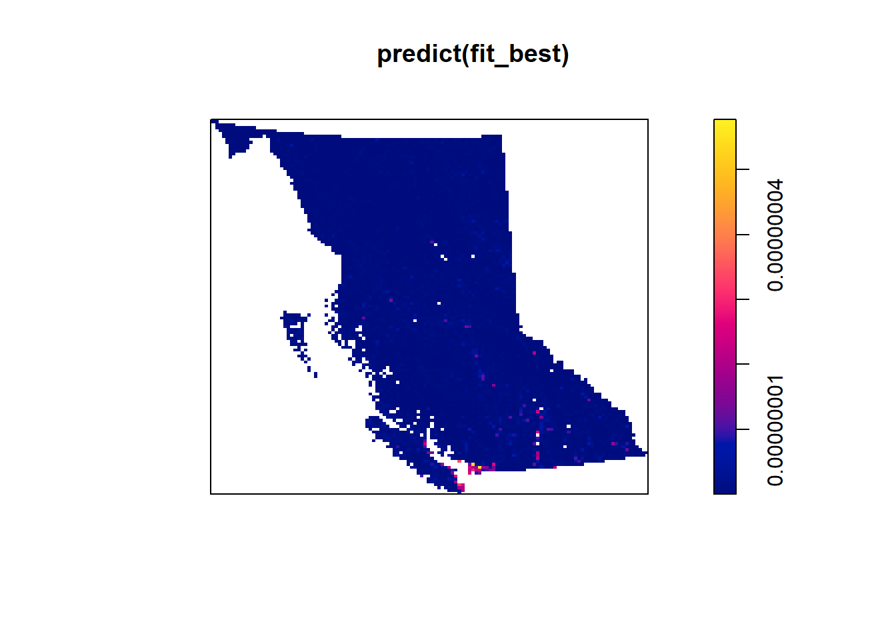